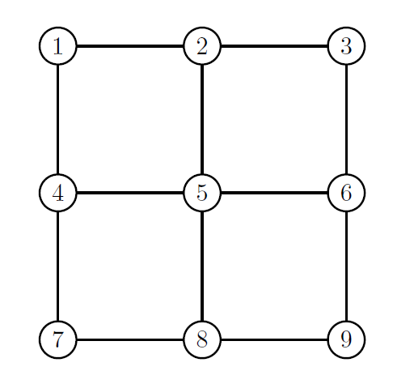
4 Cadeias de Markov a Tempo Discreto
4.1 Introdução
Considere um processo estocástico \(\{X_n,n=0,1,2,\ldots\}\), com \(X_n\in \mathcal{X}\) para todo \(n\) onde \(\mathcal{X}\) é um conjunto discreto dos estados. Neste capítulo, o conjunto de índices deste processo será interpretado como os tempos de ocorrência do processo (por exemplo, o evento \(\{X_n=x\}\) implica que no tempo \(n\) o processo apresentou o valor \(x\)). A probabilidade do processo estar no estado \(j\) no tempo \(n\) será denotada por \(P(X_n =j)\).
Exemplo: De volta ao lago…
Exemplo 4.1 Lembremos do sapo que vivia em um lago e que se movimentava exclusivamente saltando entre uma vitória régia para outra (Exercício 6.33). No tempo \(n\), ele faz um deslocamento no tempo \(n+1\) para uma das plantas vizinhas, nunca saltando na diagonal. Rotularemos as vitórias régias do lago pelos números \(1,2,\ldots,9\), gerando o grafo abaixo:
Se a escolha do destino é feita segundo algum mecanismo aleatório, podemos considerar o processo \(\{X_n,n=0,1,2,\ldots\}\) como sendo a planta (estado) no qual o sapo está o tempo \(n\). A mudança de estado, do tempo \(t\) para o tempo \(t+1\) é denominada passo. Por exemplo, se \(X_2=1\), os possíveis lugares que o sapo estará no seu próximo movimento (passo) são os estados 2 e 4. Voltaremos a este exemplo mais adiante.
Considere que foram observados os estados \(x_0,\ldots,x_{n-1}\). A probabilidade de que \(X_{n}=j\) é expressada por \[\begin{equation} P(X_{n}=j|X_{0}=x_{0},X_1=x_1,\ldots,X_{n-1}=x_{n-1}). \end{equation}\]
Dizemos que um processo estocástico possui a propriedade de Markov se a probabilidade acima depende apenas do último estado observado, ou seja \[\begin{equation} P(X_{n}=j|X_{0}=x_{0},X_1=x_1,\ldots,X_{n-1}=x_{n-1})=P(X_{n}=j|X_{n-1} = x_{n-1}). \end{equation}\] para qualquer \(n>0\).
Definição
Definição 4.1 Um processo estocástico \(\{X_n,n=0,1,\ldots\}\) cujo espaço dos estados é discreto e que possui a propriedade de Markov é denominado Cadeia de Markov a tempo discreto (CMTD).
Como a cadeia é definido para todo \(n=0,1,\ldots\), dizemos que o tempo se desloca em passos. Embora isto soe um pouco coloquial, este jargão é muito comum na literatura. Por exemplo, estando no tempo \(n\), a mudança para o tempo \(n+1\) é denominada um passo a frente e, de modo geral, “\(k\) passos a frente” implica na mudança para o tempo \(n+k\).
Em cada passo, o processo pode (ou não) mudar de estado. Essa mudança é denominada transição.
Definição
Definição 4.2 No tempo \(n\), a probabilidade do processo fazer uma transição do estado \(i\) para o estado \(j\) será denotada por \[\begin{equation} p_{ij}(n)=P(X_{n+1}=j|X_n = i), \end{equation}\] e será denominada probabilidade de transição.
É imediato que
- \(0\leq p_{ij}(n)\leq 1\) para todo \(i,j\) em \(\mathcal{X}\) e \(n\in \mathbb{Z}^+\);
- \(\sum_{j\in\mathcal{X}}p_{ij}(n)=1\).
A probabilidade de transição pode, ou não, depender de \(n\). Se \(p_{ij}(n)\) é constante para todo \(n\geq 0\), dizemos que a e denotamos tal probabilidade por \(p_{ij}\). Em caso contrário, dizemos que a CM é não-homogênea. Neste capítulo, estamos interessados apenas nas CM homogêneas. Algumas características dos processos não-homogêneos serão exploradas nos exercícios no fim do capítulo.
Exemplo: De volta ao lago II
Exemplo 4.2 Lembremos do exemplo do sapo dado no começo deste capítulo, onde o processo \(\{X_n,n=0,1,2,\}\) que denota a planta na qual o sapo está no instante \(n\). Se a escolha do próximo destino depender apenas da planta atual, este processo será uma CMTD. Isto implica que:
- Não importa quantas vezes o sapo esteve na planta \(i\). A probabilidade dele escolher outra planta a partir de \(i\) sempre será a mesma.
- Independente do valor de \(n\), o sapo sempre fará as transições do estado \(i\) para o \(j\) segundo a mesma distribuição.
4.2 Grafo de uma Cadeia de Markov
A matriz \({\bf P}=\{p_{ij}\}\) é denominada matriz de transição em um passo, ou simplesmente matriz de transição. Podemos fazer a seguinte analogia entre as matrizes de adjacência e de transição:
Na matriz de transição, se \(p_{ij}=0\) então é impossível fazer uma transição de \(i\) para \(j\) em um passo.
Na matriz de adjacências, se \(p_{ij}=0\) então não existe um arco saindo de \(i\) e chegando em \(j\).
Com a analogia acima, podemos construir um grafo a partir de uma cadeia de Markov como segue:
Cada estado da cadeia será um vértice do grafo.
Adicione um arco saindo de \(i\) para \(j\) se \(p_{ij}>0\).
Adicione um arco saindo e voltando para \(i\) se \(p_{ii}>0\) (esse arco é denominado laço).
Coloque o valor de \(p_{ij}\) no arco de \((i,j)\).
Exemplo
Exemplo 4.3 Considere a seguinte matriz de transição para uma cadeia de Markov:
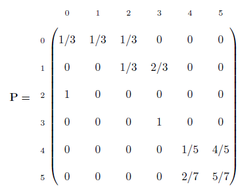
O diagrama do grafo desta cadeia é dado a seguir
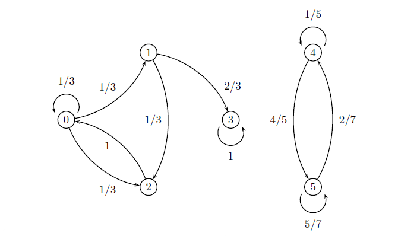
É fácil notar algumas particularidades:
- É impossível sair dos estados 0, 1, 2 ou 3 e alcançar os estados 4 ou 5. O contrário também é verdadeiro.
- Do estado 2 o processo só pode chegar ao estado 0.
- Uma vez que o processo alcança o estado 3 ele permanece nesse estado para sempre.
4.3 Exemplos de Cadeias de Markov
Exemplo: Chuva
Exemplo 4.4 Suponha que a probabilidade de chover ou não amanhã dependa apenas do fato de que choveu ou não hoje. Se choveu hoje, choverá amanhã com probabilidade \(\alpha\). Se não choveu hoje, choverá amanhã com probabilidade \(\beta\). Seja \({X_n,n=0,1,\ldots}\) o processo estocástico com espaço dos estados \(\mathcal{X}=\{0,1\}\), onde \(X_n=0\) representa o evento **“não chove no dia** \(n\)” e 1 representa seu complementar. Explique porquê este processo é uma CMTD, encontre a sua matriz de transição e esboce o grafo da cadeia.
Resolução:
Pelo enunciado, temos que
- \(P(X_n=1|X_{n-1}=1)=\alpha\)
- \(P(X_n=1|X_{n-1}=0)=\beta\)
Como a informação do dia no tempo \(n\) é suficiente para determinar a probabilidade de chover no dia \(n+1\), temos que este processo é uma CMTD. A matriz de transição é dada por
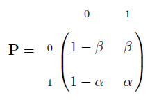
e o diagrama do grafo desta cadeia é dado por
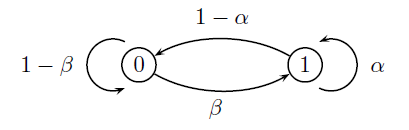
Exemplo: Passeio Aleatório
Exemplo 4.5 Seja \(\mathcal{X}\subseteq\mathbb{Z}\). Uma CMTD será um passeio aleatório se, para algum \(0<p<1\) \[p_{i,i+1}=p=1-p_{i,i-1}.\] Assim, a cadeia só pode fazer transições de um estado para os seus estados vizinhos. Um exemplo simples é dado pelo processo \({X_n,n=0,1,2,\ldots}\), onde \(n\) representa o número de lançamentos de uma moeda com probabilidade de dar cara igual a \(p\) e \(X_n\) representa a diferença entre o número de caras e coroas que saíram até o \(n\)-ésimo lançamento. Começando com \(X_0=0\), teremos que
- \(P(X_n=i+1|X_{n-1}=i)=P(\hbox{Sair um resultado cara})=p.\)
- \(P(X_n=i-1|X_{n-1}=i)=P(\hbox{Sair um resultado coroa})=1-p.\)
A representação gráfica desta cadeia é dada abaixo.
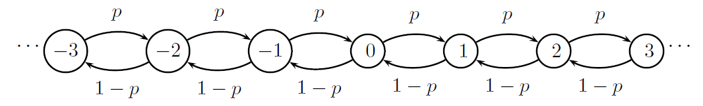
Exemplo: A ruína do jogador
Exemplo 4.6 Considere um jogador que, a cada rodada, ou ganha R$ 1,00 com probabilidade \(p\) ou perde R$ 1,00 com probabilidade \(1-p\). Suponha que o jogador só abandona o jogo se ele perde todo seu dinheiro ou se ele atinge a quantidade R$ \(N\). Seja \(\{X_n,n=0,1,2,\ldots\}\) o processo estocástico que representa a fortuna do jogador, cujo espaço dos estados é \(\mathcal{X}=\{0,1,2,\ldots,N\}\). Mostre que este processo é uma CMTD, encontre sua matriz de transição e esboce o diagrama do grafo correspondente.
Resolução:
A quantidade de dinheiro que ele vai na próxima rodada depende unicamente de quanto ele possui na rodada atual, logo o processo representa uma cadeia de Markov com as seguintes probabilidades de transição:
- \(p_{i,i+1}=p=1-p_{i,i-1}\) para todo \(i=1,2,\ldots, N-1,\)
- \(p_{00}=p_{NN}=1,\)
- \(p_{ij}=0\), caso contrário.
O grafo será dado por
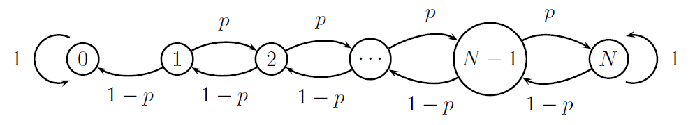
Exemplo: Sequência de somas de v.a.i.id
Exemplo 4.7 Sejam \(Y_1,\ldots,Y_n\) variáveis aleatórias independentes e identicamente distribuídas, com \[P(Y_n=k)=a_k,\quad k=0,1,2,\ldots .\] Considere a variável \(X_n=Y_1 + \cdots +Y_n\). Notemos que \[X_n = \sum_{i=1}^{n}Y_i=Y_n + \sum_{i=1}^{n-1}Y_i=Y_n+X_{n-1},\] logo \(X_n\) depende apenas de \(X_{n-1}\). Como \(Y_n\) é independente de \(X_{n-1}\), temos que, para \(j\geq i\), \[\begin{align*} P(X_n=j|X_{n-1}=i)&=P(X_{n-1}+Y_n=j|X_{n-1}=i)\\ &=P(Y_n=j-i|X_{n-1}=i)\\ &=P(Y_n=j-i)=a_{j-i}. \end{align*}\] e, para \(j<i\), \[P(X_n=j|X_{n-1}=i)=0.\] Portanto, o processo de contagem em tempo discreto de variáveis aleatórias discretas, independentes e identicamente distribuídas é uma cadeia de Markov.
Exemplo: Inventário
Exemplo 4.8 Considere um intervalo pré-fixado de tempo (como um mês, um semestre, etc). Suponha que a demanda \(Y_n\) por certo produto no \(n\)-ésimo intervalo de tempo é independente do tempo e identicamente distribuída com \[P(Y_n = k)=a_k,\quad k=0,1,\ldots.\] Uma loja estoca este produto. Seja \(X_n\) o número destes produtos em estoque no final do intervalo de tempo \(n\) e seja \(C\) o número máximo de itens a serem estocados. No início do \(n\)-ésimo período o estoque é examinado e a seguinte política de renovação é adotada:
- Se \(X_n\leq s\), o estoque é imediatamente completado até atingir a quantidade \(C\).
- Se \(X_n>s\), nada é feito.
Notemos que \(X_n\) depende apenas de \(X_{n-1}\), pois:
- Se \(X_{n-1}\leq s\), o estoque é renovado. Como demanda levará \(Y\) unidades, teremos \(X_{n}=C-Y\).
- Se \(X_{n-1}>s\), a demanda no tempo \(n\) levará \(Y\) unidades do estoque e \(X_n = X_{n-1}-Y.\)
Assim, temos que \(X_n\) é uma CMTD com as seguintes probabilidades de transição: \[\begin{align*} &P(X_n=j|X_{n-1}=i,i\leq s)=P(Y=C-j)=a_{C-j}\\ &P(X_n=j|X_{n-1}=i,i> s)=P(Y=i-j)=a_{i-j}. \end{align*}\]
Exemplo: PageRank
Exemplo 4.9 Páginas de pesquisa da web, como o Google, utilizam uma CMTD para mostrar as páginas com maior relevância. Suponha que existem \(N\) páginas conhecidas. Suponha ainda que a \(i\)-ésima página possui \(k_i\) links. Seja \(H\) o evento no qual um usuário utiliza os links para navegar, com \(P(H)=\alpha\) e seja \(X_n\) a página na qual o indivíduo se encontra no tempo \(n\). Estando na página \(i\) considere que:
- o usuário escolhe um link ao acaso. Neste caso, \[P(X_n =j|X_{n-1}=i, H)=\frac{1}{k_i},\] quando existe um link na página \(i\) para a página \(j\).
- o usuário não utiliza um link. Neste caso, ele escolhe ao acaso entre todas as páginas \[P(X_n= j|X_{n-1}=i,H^c)=\frac{1}{N},\] onde \(N\) é o número de páginas disponíveis (essa probabilidade inclui a possibilidade do indivíduo entrar na mesma página outra vez).
Assim, se existe um link para a página \(j\) a partir da página \(i\), a probabilidade desta transição é dada por \[\begin{align*} p_{ij}&=P(X_n=j|X_{n-1}=i)\\&=P(X_n=j,H|X_{n-1}=i)+P(X_n=j,H^c|X_{n-1}=i)\\&=P(X_n=j|X_{n-1}=i,H)P(H)+P(X_{n}=j|X_{n-1}=i,H^c)P(H^c)\\ &=\frac{\alpha}{k_i}+\frac{1-\alpha}{N}, \end{align*}\] e, se \(k_i=0\), ou se \(j=i\), então utiliza-se a seguinte expressão: \[\begin{align*} p_{ij}=\frac{1-\alpha}{N}. \end{align*}\] Podemos calcular a probabilidade de que \[\lim_{n\rightarrow\infty}P(X_n=i),\] o que, intuitivamente, implica em calcular a probabilidade de se estar no site \(i\) após muito tempo de navegação. Organizando estas últimas probabilidades em ordem decrescente, temos o ranqueamento das páginas por ordem de relevância. Este método é conhecido como PageRank. Mais detalhes serão dados posteriormente.
4.4 As Equações de Chapman-Kolmogorov
No estudo de uma CMTD, é interessante saber qual a probabilidade do processo, saindo do estado \(i\), estar em \(j\) após \(n\) passos, ou seja \(P(X_{n}=j|X_0 = i)\). Tal probabilidade é denominada transição \(n\) passos a frente, e é denotada por \(p_{ij}^{(n)}\). A partir desta definição, pode-se enunciar a seguinte proposição.
Proposição
Proposição 4.1 Para uma CMTD, \[\begin{align} P(X_{n+m}=j|X_n=i,X_{n-1}=i_{n-1},\ldots,X_0=i_0)=p_{ij}^{(m)} \end{align}\]
Demonstração:
A prova pode ser feita por indução. Note que a proposição é verdadeira para \(m=1\), pois pela propriedade de Markov, \[P(X_{n+1}=j|X_{n}=i,X_{n-1}=i_{n-1},\ldots,X_0=i_0)=p_{ij}=p_{ij}^{(1)}.\] Para \(m>2\), suponha que \[P(X_{n+m-1}=j|X_{n}=i,Y_{n-1})=P(X_{n+m-1}=j|X_{n}=i)=p_{ij}^{(m-1)},\] onde \(Y_{n-1} = \{X_{n-1}=x_{n-1},\ldots,X_0=x_0\}\). Então, \[\begin{align*} P(X_{n+m}=j|X_{n}=i, Y_{n-1})&=\sum_{x=0}^{\infty} P(X_{n+m}=j,X_{n+m-1}=x|X_{n}=i, Y_{n-1})\\ &=\sum_{x=}^{\infty} P(X_{n+m}=j|X_{n+m-1}=x,X_{n}=i,Y_{n-1})\\ &\times P(X_{n+m-1}=x|X_{n}=i,Y_{n-1})\\ &=\sum_{x=0}^{\infty}P(X_{n+m}=j|X_{n+m-1}=x)P(X_{n+m-1}=x|X_{n}=i)\\ &=\sum_{x=0}^\infty P(X_{n+m}=i,X_{n+m-1}=x|X_{n}=i)\\ &=P(X_{n+m}=j|X_n=i)=p_{ij}^{(m)}. \end{align*}\]
Portanto, a propriedade de Markov continua válida para um número de passos maior que um.
Exemplo
Exemplo 4.10 A CMTD abaixo foi apresentada no Exemplo 4.3.
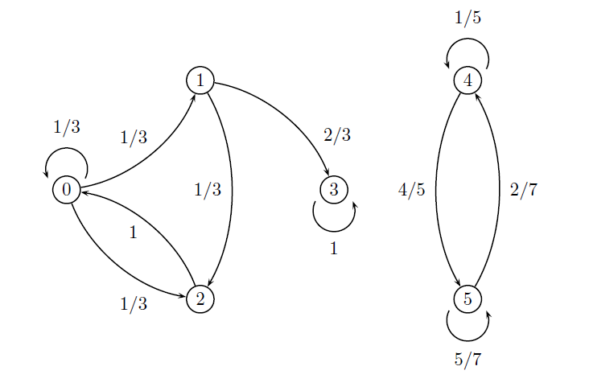
Mas, note que \(p_{0i}p_{ij}\) é o produto do valor do arco \((0,i)\) com o valor do arco \((i,j)\). Assim, calcular a probabilidade de sair de \(0\) e chegar em \(j\) em dois passos é equivalente a colocar uma caneta no estado zero e encontrar todos os caminhos em dois passos até \(j\), multiplicar os valores dos arcos em cada caminho e somar o resultado final. Continuando com o exemplo, temos os seguintes caminhos com suas respectivas probabilidades:
| Estado de destino (\(j\)) |
Caminhos em dois passos |
\(p_{0i}p_{ij}\) | \(p_{0j}^{(2)}\) | ||
|---|---|---|---|---|---|
| 0 | \(0\rightarrow 0\rightarrow 0\) \(0\rightarrow 2\rightarrow 0\) |
\(p_{00}p_{00}=\frac{1}{9}\) \(p_{02}p_{20}=\frac{1}{3}\) |
\(p_{00}^{(2)}=\frac{1}{9}+\frac{1}{3}=\frac{4}{9}\) | ||
| 1 | \(0\rightarrow 0\rightarrow 1\) | \(p_{00}p_{01}=\frac{1}{9}\) | \(p_{01}^{(2)}=1/9\) | ||
| 2 | \(0\rightarrow 0\rightarrow 2\) \(0\rightarrow 1\rightarrow 2\) |
\(p_{00}p_{02}=\frac{1}{9}\) \(p_{00}p_{02}=\frac{1}{9}\) |
\(p_{02}^{(2)}=2/9\) | ||
| 3 | \(0\rightarrow 1\rightarrow 3\) | \(p_{01}p_{13}=\frac{2}{9}\) | \(p_{03}^{(2)}=2/9\) |
Assim, estando em \(0\), a probabilidade de que o estado esteja em 0 em dois passos é de 4/9. Agora, para calcular as probabilidades \(p_{0j}^{(3)}\), note primeiro que nós já conhecemos essas probabilidades em dois passos. Assim, \[\begin{align} p_{0j}^{(3)}&=P(X_3=j|X_0=0)=\sum_{i=0}^{5}P(X_3=j,X_2=i|X_0=0)\notag\\ &=\sum_{i=0}^{5}P(X_3=j|X_2=i,X_0=0)P(X_2=i|X_0=0)\notag\\ &=\sum_{i=0}^{5}P(X_3=j|X_2=i)P(X_2=i|X_0=0) \\ &=\sum_{i=0}^5 p_{0i}p_{ij}^{(2)}. \end{align}\] Como no caso anterior, o cálculo de \(p_{0j}^{(3)}\) depende do produto \(p_{0i}p_{ij}^{(2)}\). Entretanto, \[p_{0i}p_{ij}^{(2)}=p_{0i}\sum_{k=0}^{5}p_{ik}p_{kj}.\] Portanto, a probabilidade de \(p_{0j}^{(3)}\) é obtida pela soma dos produtos \(p_{0i}p_{ik}p_{kj}\). Novamente, poderíamos colocar uma caneta no estado 0 e traçar todos os caminhos que saem de 0 e chegam em \(j\) em três passos, calcular o produto dos valores dos arcos de cada caminho e somar os resultados. Contudo, como já conhecemos \(p_{0i}^{(2)}\), podemos simplificar nosso trabalho com utilizando a expressão acima. A tabela abaixo mostra os cálculos.
| Estado de destino (\(j\)) |
Caminhos em dois passos (i) | \(p_{0i}^{(2)}p_{ij}\) | \(p_{0j}^{(3)}\) |
|---|---|---|---|
0 |
0 1 2 3 |
\(p_{00}^{(2)}p_{00}=\frac{4}{27}\) \(p_{01}^{(2)}p_{10}=0\) \(p_{02}^{(2)}p_{20}=\frac{6}{27}\) \(p_{03}^{(2)}p_{30}=0\) |
\(p_{00}^{(3)}=\frac{10}{27}\) |
1 |
0 1 2 3 |
\(p_{00}^{(2)}p_{01}=\frac{4}{27}\) \(p_{01}^{(2)}p_{11}=0\) \(p_{02}^{(2)}p_{21}=0\) \(p_{03}^{(2)}p_{31}=0\) |
\(p_{01}^{(3)}=\frac{4}{27}\) |
2 |
0 1 2 3 |
\(p_{00}^{(2)}p_{02}=\frac{4}{27}\) \(p_{01}^{(2)}p_{12}=\frac{1}{27}\) \(p_{02}^{(2)}p_{22}=0\) \(p_{03}^{(2)}p_{32}=0\) |
\(p_{02}^{(3)}=\frac{5}{27}\) |
3 |
0 1 2 3 |
\(p_{00}^{(2)}p_{03}=0\) \(p_{01}^{(2)}p_{13}=\frac{2}{27}\) \(p_{02}^{(2)}p_{23}=0\) \(p_{03}^{(2)}p_{33}=\frac{2}{9}\) |
\(p_{03}^{(3)}=\frac{8}{27}\) |
O exemplo anterior nos mostrou que as probabilidades de transição em dois passos podem ser utilizadas para encontrar as probabilidades em três passos. Esse resultado pode ser generalizado. Primeiro, supondo-se que \(p_{ij}^{(m-n)}\) é conhecida, pela homogeneidade da CMTD, é intuitivo que para calcular \(p_{ij}^{(m)}\) basta conhecer a probabilidade dos \(n\) passos restantes, ou seja \(p_{ij}^{(n)}\). Esta relação é verdadeira, como mostra a proposição a seguir.
Proposição: Chapman-Kolmogorov
Proposição 4.2 Para \(m> n\), \[p_{ij}^{(m)}=\sum_{k=0}^{\infty}p_{ik}^{(n)}p_{kj}^{(m-n)}.\] Esse conjunto de equações1 é denominado Equações de Chapman-Kolmogorov (CK).
Demontração:
Portanto, a partir das probabilidades de transição em \(m\) passos pode-se definir a matriz de transição em \(m\) passos, denotada por \({\bf P}^{(m)}\). Novamente, tem-se que \(p_{ij}^{(m)}\) estará no cruzamento entre a \(i\)-ésima linha com a \(j\)-ésima coluna de \({\bf P}^{(m)}\).
Existe uma relação direta entre as matrizes \({\bf P}\) e \({\bf P}^{(m)}\). Considerando-se a \({\bf A}=\{a_{i,j},i,j=0,\ldots,n\}\), tem-se que \({\bf A}^2=\{b_{ij}=\sum_{k=0}^{n}a_{ik}a_{kj}\}\) (a regra ainda é válida para \(n=\infty\)). Se tomarmos \({\bf A}={\bf P}\), teremos que \[{\bf P}^{2}=\{ q_{ij}=\sum_{k=0}^{n}p_{ik}p_{kj},i,j=0,1,\ldots,n\}.\] Mas, por CK, temos que \(q_{ij}=p_{ij}^{(2)}\). Assim, \({\bf P}^{(2)}={\bf P}^2\). É deixado como exercício para o leitor mostrar a seguinte proposição.
Proposição
Proposição 4.3 Seja \(\bf{P}\) a matriz de transição de uma CMTD e seja \({\bf P}^{(n)}\) sua respectiva matriz de transição \(n\) passos a frente. Então \({\bf P}^{(m)}={\bf P}^m\).
Exemplo: Chuva revisitado
Exemplo 4.11 No Exemplo 4.4 foi apresentado o processo \(\{X_n,n=0,1,\ldots\}\) sendo que \(X_{n}=I(\text{Chove no dia n})\). Suponha que \({\bf P}\) é dada por:
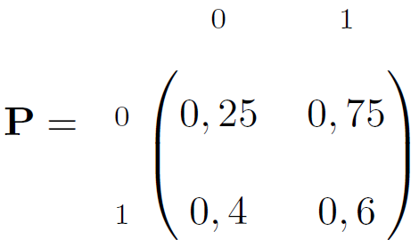
A matriz de transição dois passos a frente é
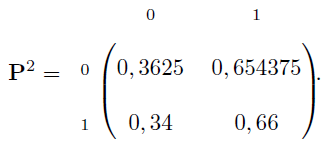
Por exemplo, se não chove hoje, a probabilidade de chover daqui a dois dias é de 65,4%. Podem ser feitas previsões para horizontes maiores. Por exemplo, as matrizes de transição para 3 e 10 passos a frente são
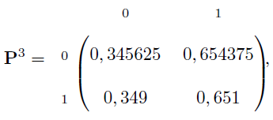
e
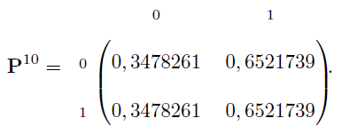
Entretanto, as linhas destas matriz parecem ficar cada vez mais próximas na medida em que o número de passos as frente aumenta. Isso implica em dizer que o último estado conhecido não tem influência quando o número de passos aumenta. Assumir que isto é verdade implica em assumir que existem constantes \(\pi_j\), \(j=0,1\) tais que \[\lim_{n\rightarrow\infty}p_{ij}^{(n)}=\pi_j,\] Neste exemplo em especial, \(\pi_0\approx.3478\) e \(\pi_1\approx.652\), o que implicaria que, após observar o processo por um tempo suficiente, a probabilidade de se observar um dia chuvoso é de aproximadamente 65%. Entretanto, não temos (ainda!) garantias da existência desse limite. Este assunto é discutido na Seção 4.6.
4.5 Classificação de Estados
4.5.1 Comunicação entre Estados
É dito que \(j\) é acessível a partir de \(i\) se existe a probabilidade de que o processo saia de \(i\) e entre em \(j\) em algum momento. Na representação do grafo, \(j\) é acessível a partir de \(i\) se existe um arco orientado saindo de \(i\) e chegando em \(j\). Formalmente:
Definição: Acessibilidade
Definição 4.3 É dito que o estado \(j\) é acessível a partir de \(i\), se existe pelo menos um \(n\) tal que \(p_{ij}^{(n)}>0\). Notação: \(i\rightarrow j\).
Definição: Comunicabilidade
Definição 4.4 É dito que \(i\) se comunica com \(j\) se \(i\rightarrow j\) e \(j\rightarrow i\). Notação: \(i\leftrightarrow j\).
Definição
Definição 4.5 É dito que os estados \(i\) e \(j\) estão na mesma classe se \(i\leftrightarrow j\).
Em um grafo, dois estado comunicam-se se existem caminhos orientados que ligam os estados nos dois sentidos.
Proposição
Proposição 4.4 Para dois estados \(i\) e \(j\) quaisquer:
- \(i\leftrightarrow i\).
- Se \(i\leftrightarrow j\) então \(j\leftrightarrow i\) (propriedade reflexiva).
- Se \(i\leftrightarrow k\) e \(k\leftrightarrow j\), então \(i\leftrightarrow j\).
Demontração:
Temos que:
- Como \(p_{ii}^{(0)}=1\), temos que \(i\rightarrow i\), logo \(i\leftrightarrow i\).
- Se \(i\leftrightarrow j\), então existem \(i\rightarrow j\) e \(j\rightarrow i\). Logo, existe \(j\leftrightarrow i\).
- Se \(i\leftrightarrow k\) e \(k\leftrightarrow j\), então \(i\rightarrow j\) (pois existe uma sequência de arcos orientados saindo de \(i\) e chegando em \(k\), outra sequência saindo de \(k\) e chegando em \(j\)). De maneira análoga \(j\rightarrow i\), logo \(i\leftrightarrow j\).
Por último, existem estados que não podem acessar nenhum outro, ou seja, para todo \(j\neq i\) e qualquer \(n\) teremos \(p_{ij}^{n}=0\). Neste caso, teremos que \(p_{ii}^{(n)}=1\) para qualquer \(n\). Um estado com essa característica é denominado estado absorvente.
Exemplo
Exemplo 4.12 A CMTD abaixo foi apresentada no Exemplo 4.3.
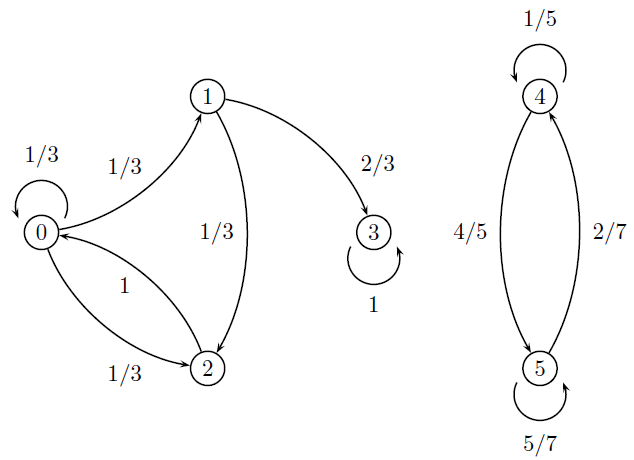
Sobre a acessibilidade, podemos dizer que:
- Os estados 1,2 e 3 são acessíveis a partir de 0. Note que podemos sair de 0 e chegar em 1 e 2 com apenas um passos, enquanto que serão necessários pelo menos dois passos para chegar no estado 3. Assim \(0\rightarrow 1\),\(0\rightarrow 2\) e \(0\rightarrow 3\), mas \(0\nrightarrow 4\) e \(0\nrightarrow 5\).
- Os estados 0, 2 e 3 são acessíveis a partir de 1. Assim, \(1\rightarrow 0\), \(1\rightarrow 2\) e \(1\rightarrow 3\), mas \(1\nrightarrow 4\) e \(1\nrightarrow 5\).
- Nenhum estado é acessível a partir de 3. Assim \(3\nrightarrow j\) para todo \(j\neq 3\).
- Por último \(4\nrightarrow 5\) e \(5\nrightarrow 4\).
Sobre a comunicabilidade, podemos dizer que
- \(0\leftrightarrow 1\) e \(0\leftrightarrow 2\), pois podemos sair de 0, chegar nestes estados e voltar.
- \(1\leftrightarrow 0\) e \(1\leftrightarrow 2\), pois podemos sair de 1, chegar nestes estados e voltar.
- \(2\leftrightarrow 0\) e \(2\leftrightarrow 1\), pois podemos sair de 2, chegar nestes estados e voltar.
- \(4\leftrightarrow 5\).
Disto, temos as seguintes classes de estados: \(\{0,1,2\}, \{3\} \text{ e } \{4,5\}\). Por último, note que o estado 3 é absorvente.
Por último, dizemos que uma CMTD é irredutível se ela possui uma única classe.
4.13 Exemplo (Chuva revisitado)
Exemplo 4.13 A CMTD do Exemplo 4.4 é irredutível.
4.5.2 Classes Transientes e Recorrentes
Considere o grafo da seguinte CMDT
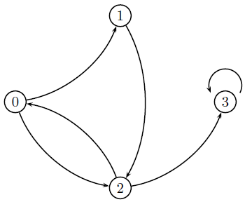
Existem duas classes nessa cadeia: \(C_1=\{0,1,2\}\) e \(C_2\{3\}\). Se o processo começar no estado 3, ele nunca mais sairá destes (ele é absorvente). Então, considere que o processo começou em outro estado da classe \(C_1\). Toda vez que o processo passar pelo estado 2, existe a chance ele ir para a classe \(C_2\) - e, portanto, de nunca voltar para \(C_1\). Considere agora o grafo abaixo

Podemos notar que existem duas classes: \(C_1=\{0,1,2\}\) e \(C_2=\{3,4\}\). Começando na classe \(C_2\), não é como o processo chegar até a classe \(C_1\). Entretanto, estando em \(C_1\), sempre existe a probabilidade do processo fazer uma transição do estado 2 para o 3 e nunca mais voltar para \(C_1\).
os dois exemplos acima vimos dois tipos de classes: aquelas que o processo pode abandonar e as que o processo nunca abandona. Esses tipos são denominados transiente e recorrente, respectivamente. Antes de definirmos formalmente estes tipos de classes, é conveniente primeiro definir estados recorrentes e transientes.
Seja \(f_{ij}^{(n)}\) a probabilidade do processo sair do estado \(i\) e chegar, pela primeira vez em \(j\), em exatos \(n\) passos, ou seja \[\begin{equation} f_{ij}^{(n)}=P(X_n=j,X_{n-1}\neq j,\ldots, X_1\neq j|X_0 =i). \end{equation}\]
A probabilidade de que o processo saia de \(i\) e chegue em \(j\) em algum momento é dada por \[\begin{align*} f_{ij}&=P(\hbox{$\cup_{n=1}^\infty$\{chegar em $j$ em exatos $n$ passos\}})\\ &=\sum_{n=1}^{\infty}P(\hbox{ \{chegar em $j$ em exatos $n$ passos\}})\\ &=\sum_{n=1}^{\infty}f_{ij}^{(n)}. \end{align*}\]
Com isso, podemos definir estados transientes e recorrentes.
Definição
Definição 4.6 Dizemos que o estado \(i\) é recorrente se \(f_{ii}=1\) e dizemos que ele é transiente se \(f_{ii}<1\).
Assim, ao sair de um estado recorrente, o processo retornará com probabilidade um (ele retornará certamente). Por outro lado, ao sair de um estado transiente, sempre haverá a possibilidade de o processo não voltar para este estado. De fato, podemos mostrar que um estado transiente só pode ser visitado um número finito de vezes.
Proposição
Proposição 4.5 eja \(i\) um estado transiente. Então, se o processo passar por \(i\), esse estado será visitado um número finito de vezes.
Demontração:
Seja \(i\) um estado transiente e, sem perda de generalidade, assuma que \(X_0=i\). Seja \(A_k\) o evento no qual o processo saiu de \(i\) e voltou pela \(k\)-ésima vez. Temos que os eventos \(A_k\), \(k=1,2,\ldots,\) são independentes (pela propriedade de Markov, uma vez estando no estado \(i\), todo o caminho já percorrido é irrelevante). Temos ainda que \(P(A_k)=f_{ii}\). Notemos que, se ocorrer \(A_{k}^c\), o processo nunca mais retornará para \(i\). Seja \(M\) o número de vezes que o processo voltou para \(i\). Temos que \(M\) terá distribuição geométrica, ou seja \[P(M=m)=f_{ii}^{m}(1-f_{ii}),\quad n=0,1,2,\ldots.\]
Corolário
Corolário 4.1 eja \(i\) um estado transiente e seja \(M\) de vezes que o processo voltou para \(i\). Então \[E(M)=\frac{f_{ii}}{1-f_{ii}}<\infty.\]
Para mostrar que um estado \(i\) é transiente (ou recorrente) diretamente pela Definição 4.10, é necessário calcular a probabilidade \(f_{ii}\). A seguinte proposição mostra que isto também é possível utilizando diretamente as probabilidades de transição em \(n\) passos.
Proposição
Proposição 4.6 O estado \(i\) é transiente se e somente se \(\sum_{n=1}^{\infty}p_{ii}^{(n)}<\infty\).
Demonstração:
Seja \(M=\sum_{n=1}^{\infty}I(X_n=i)\) (i.é, \(M\) é o número de vezes que o processo retorna a \(i\)). Então \[\begin{align*} E(M|X_0=i)&= E[\sum_{n=1}^{\infty}I(X_n=i)|X_0=i]=\sum_{n=1}^{\infty} E[I(X_n=i)|X_0=i]\\ &=\sum_{n=1}^\infty P(X_n =i | X_0 = i)=\sum_{n=1}^\infty p_{ii}^{(n)}. \end{align*}\] Se \(i\) é transiente, então \(E(M|X_0=i)\) deve ser finito, o que implica em \(\sum_{n=1}^\infty p_{ii}^{(n)}<\infty\). Se \(\sum_{n=1}^{(n)}p_{ij}^{(n)}<\infty\), então \(E(M|X_0)\) é finito e o estado \(i\) é visitado apenas um número finito de vezes, o que implica que \(i\) é transiente.
Corolário
Corolário 4.2 estado \(j\) é recorrente se e somente se \(\sum_{n=1}^{\infty}p_{jj}^{(n)}=\infty\).
Agora, mostraremos que se existe um estado transiente(recorrente) em uma classe, então, todos os estados da classes também serão transientes (recorrentes).
Proposição
Proposição 4.7 Se \(i\leftrightarrow j\) e \(i\) é transiente, então \(j\) é transiente. Além disso, se \(i\leftrightarrow j\) e \(i\) é recorrente, então \(j\) é recorrente.
Como \(i\leftrightarrow j\), então existe um número de passos \(n\) tal que é possível sair de \(i\) e chegar em \(j\) e um número de passos \(m\) tal que é possível sair de \(j\) e chegar em \(i\), logo \(p_{ij}^{(n)}>0\) e \(p_{ji}^{(m)}>0\). Notemos que \[\begin{align*} \sum_{v=0}^{\infty}p_{jj}^{(m+n+v)}&= \sum_{v=0}^{\infty}\sum_{u=0}^{\infty}\sum_{s=0}^{\infty}p_{ju}^{(m)}p_{us}^{(v)}p_{sj}^{(n)} \geq \sum_{v=0}^{\infty}p_{ji}^{(m)}p_{ii}^{(v)}p_{ij}^{(n)}\\&=p_{ji}^{(m)}p_{ij}^{(n)}\sum_{v=0}^{\infty}p_{ii}^{(v)} \end{align*}\] Notando que \(\sum_{v=0}^{\infty} p_{jj}^{(m+n+v)}=\sum_{v^\star=m+n}^{\infty}p_{jj}^{(v^\star)}\), teremos \[\sum_{v^\star=0}^\infty p_{jj}^{(v^\star)}>\textcolor{blue}{\sum_{v^\star=m+n}^\infty p_{jj}^{(v^\star)}}\geq p_{ji}^{(m)}p_{ij}^{(n)}\sum_{v=0}^{\infty}p_{ii}^{(v)}\]
Assim, se \(j\) for transiente, teremos que \(\sum_{v=0}^{\infty}p_{jj}^{(v)}<\infty\) e, portanto \(\sum_{v=0}^{\infty}p_{ii}^{ (v)}<\infty\) o que implica em \(i\) ser transiente. Além disso, podemos seguir os mesmos passos e mostrar que \[\sum_{v^\star=0}^\infty p_{ii}^{(v^\star)}\geq p_{ji}^{(n)}p_{ji}^{(m)}\sum_{v=0}^{\infty}p_{jj}^{(v)},\] logo, \(i\) transiente implica em \(j\) transiente. Por último, se um dos dois estados for recorrente, o outro deve ser recorrente também.
Corolário
Corolário 4.3 Seja \(C\) uma classe de estados. Se \(i\in C\) e \(i\) é transiente(recorrente), então todos os estados de \(C\) serão transientes(recorrentes).
Agora, seja um estado \(i\) recorrente. Já é conhecido que, partindo de \(i\), o processo visitará \(i\) infinitas vezes. Entretanto, existem estados recorrentes cujo tempo médio de retorno não é finito. Para explicar melhor esse fenômeno, recorde que, se \(i\) é recorrente, então \(f_{ii}=\sum_{n=1}^{\infty}f_{ii}^{(n)}=1\). Deste modo, \(f_{ii}^{(n)}\) é função de probabilidade de uma variável \(N\) que representa o número de passos necessários para o processo sair de \(i\) e voltar pela primeira vez para \(i\). Assim, defina \[\begin{equation} \mu_{ii}=\sum_{n=1}^\infty n f_{ii}^{(n)}, \end{equation}\] como sendo o tempo médio da recorrência e considere a CMTD abaixo:
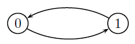
É fácil notar que a CMTD acima é irredutível e sua única classe é recorrente. Tomando o estado 0, notemos que:
- \(f_{00}^{(1)}=0\), pois é impossível chegar em zero em um passo.
- \(f_{00}^{(2)}=1\), pois sempre chegaremos em zero em dois passos.
- \(f_{00}^{(k)}=0\), \(k>2\), pois não é possível partir de zero e chegar em zero pela primeira vez em um número de passos maior que 2.
Portanto, \[\begin{equation} \mu_{00}=\sum_{n=1}^{\infty}nf_{00}^{(n)}=1\times f_{00}^{(1)} + 2\times f_{00}^{(2)} =2 \end{equation}\] Como a \(\mu_{00}=2<\infty\), esperamos que o processo volte para 0 em um tempo finito. Indo para o outro extremo, considere a CMDT com as seguintes probabilidades de transição: \[p_{01}=1,p_{i,i+1}=\frac{i}{i+1},p_{i0}=\frac{1}{i+1},\] com \(i=1,2,\ldots\), cujo grafo está esboçado abaixo:
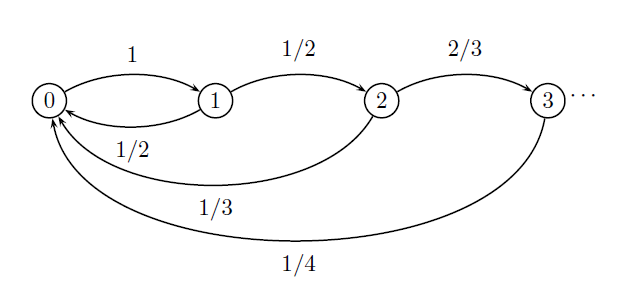
Como existe a probabilidade do processo chegar em qualquer estado e depois voltar para zero, a CMDT acima é irredutível. Para mostrar que a cadeia é recorrente, note que:
- \(f_{00}^{(1)}=0\);
- \(f_{00}^{(2)}=\frac{1}{1}\frac{1}{2}\);
- \(f_{00}^{(3)}=\frac{1}{2}\frac{1}{3}\)
- \(f_{00}^{(4)}=\frac{1}{2}\frac{2}{3}\frac{1}{4}=\frac{1}{3}\frac{1}{4}\)
- \(\vdots\)
- \(f_{00}^{(n)}=\frac{1}{n(n-1)}\)
Assim, \[f_{00}=\sum_{n=2}^{\infty}\frac{1}{n(n-1)}=\lim_{k\rightarrow\infty}\sum_{n=2}^{k}\frac{1}{n(n-1)}=\lim_{k\rightarrow\infty}\frac{k-1}{k}=1,\] logo 0 é recorrente. Além disso, \[\mu_{00}=\sum_{n=1}^{\infty}nf_{00}^{(n)}=\sum_{n=2}^{\infty}\frac{1}{n-1}=\infty,\] sendo que o tempo médio de recorrência para o estado 0 não é finito. Portanto, os estados recorrentes podem ser classificados em dois tipos, segundo a definição abaixo.
Definição
Definição 4.7 Seja \(i\) um estado recorrente. Dizemos que \(i\) é recorrente positivo se \(\mu_{ii}<\infty\) e dizemos que \(i\) é recorrente nulo se \(\mu_{ii}=\infty\).
Proposição
Proposição 4.8 Recorrência positiva(nula) são propriedades de classe.
Demonstração: Considere uma classe recorrente contendo os estados \(i\) e \(j\). Se \(i\) é recorrente positivo, então o processo consegue se deslocar de \(i\) para \(j\) e depois voltar para \(i\) em um tempo finito. Isto implica que o processo consegue sair de \(j\), chegar em \(i\) e voltar para \(j\) em um tempo finito. Assim, \(j\) deve ser recorrente positivo e, recorrência positiva é propriedade de classe.
Agora, se um dos estados de uma classe for recorrente nulo, os outros não podem ser recorrentes positivos, pelo resultado acima. Logo, recorrência nula também é propriedade de classe.
O próximo resultado será útil mais adiante.
Proposição
Proposição 4.9 Uma CMTD irredutível finita (ou seja, com espaço dos estados finito) é recorrente positiva.
Demonstração: Em uma cadeia irredutível todos os estados se comunicam. Suponha por absurdo que a cadeia é transiente. Então, todos os estados deveriam ser visitados um número finito de vezes. Isso é absurdo pois, como existe um número finito de estados, o processo sempre deve revisitar algum estado. Assim, toda CMTD irredutível e finita é recorrente.
Agora, suponha por absurdo que \(j\) é recorrente nulo. Isto implica que a cadeia gasta pouco tempo neste estado. Mas essa afirmativa deveria ser verdadeira para todos os estados. Assim, saindo de \(j\), cada estado só poderia ser visitado poucas vezes. Como a cadeia é finita, o processo será obrigado a revisitar um dos estados em um tempo finito, fazendo com que esse estado seja recorrente positivo, e implicando que \(j\) deveria ser recorrente positivo, gerando um absurdo. Portanto, o estado \(j\) deve ser recorrente positivo.
4.5.3 Periodicidade de um Estado
Alguns estados em uma CM possuem a propriedade de só poderem ser atingidos em tempos distintos. Tais estados são ditos periódicos. Por exemplo, considere o grafo a seguir:
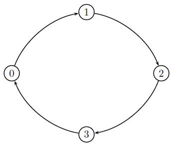
Se o processo estiver em 0 no tempo \(0\), ele estará de volta ao estado 0 apenas nos tempos \(4,8,12,\ldots\), que são múltiplos de 4. Cadeias que possuem esse tipo de regularidade são denominadas periódicas.
Definição: Estado periódico
Definição 4.8 O estado \(i\) de uma Cadeia de Markov é dito ser periódico se todos os retornos ao estado \(i\) ocorrem em um número de passos múltiplo de \(k\) (neste caso, é dito que o período de \(i\) é igual a \(k\)).
Formalmente, seja \(D_i=\{n\geq 1 : p_{ii}^{(n)}>0\}\), ou seja, o conjunto com os números de passos necessários para o retorno ao estado e seja \(k\) o máximo divisor comum (mdc) de \(D_i\). Então \(k\) é denominado período do estado \(i\). Notação: \(d(i)=k\).
Voltando ao exemplo acima, pode-se notar que \[D_0=\{4n,n=1,2,\ldots\},\] logo \(d(0)=4\).
Sejam \(mdc(a,b)\) o máximo divisor comum entre \(a\) e \(b\). É importante recordar alguns fatos:
- Todo número pode ser decomposto em fatores primos.
- Sejam \(a\) e \(b\) dois números e sejam \(a=p\times p_a\) e \(b=p\times p_b\) suas respectivas decomposições em fatores primos, onde \(p\) é comum para ambos. Então o \(mdc(a,b)=p\).
- Sejam \(n_1\) e \(n_2\) inteiros positivos e seja \(c=n_1a+n_2b\). Se \(mdc(a,b)=p\), então o \(mcd(a,b,c)=p\).
É importante separar a noção de período com o número de passos necessários para retornar ao estado. Se um estado possui período \(d\), então o processo só retornará ao estado em passos múltiplos de \(d\), mas não em todos os passos múltiplos de \(d\). O exemplo abaixo ilustra esse fato.
Exemplo: Relação entre período e passos
Exemplo 4.14 É possível que uma CMTD tenha estados com período \(d\) que não podem ser atingidos em \(d\) passos (ou seja, com \(p_{ii}^{(d)}=0\)). Considere a CMDT abaixo:
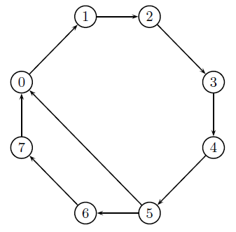
No grafo acima, pode-se perceber que, saindo de 0, o processo só retorna por dois caminhos: de \(\{0,1,2,3,4,5,6,7,0\}\) ou \(\{0,1,2,3,4,5,0\}\). Neste caso, é possível voltar em um número de passos múltiplo de 6, de 8 e de combinações destes dois (por exemplo, é possível volar em 14 passos, fazendo o caminho completo de seis passos e depois fazendo o caminho de 8 passos). Entretanto, como todos esses caminhos são combinações de \(6\) e \(8\), precisamos apenas encontrar o \(mdc\) destes dois. Assim, o período de 0 é \(d(0)=2\). Entretanto, note que \(p_{ii}^{(2)}\) é igual a zero.
Exemplo
Exemplo 4.15 Considere a seguinte matriz de transição:
\[\begin{align}{\bf P}=\left(\begin{array}{cc} 0 & 1 \\ 1 & 0\end{array}\right)\end{align}\]
Note que não podemos voltar para nenhum dos dois estados em um passo, mas
\[\begin{align}{\bf P}^2=\left(\begin{array}{cc} 1 & 0 \\ 0 & 1\end{array}\right),\end{align}\]
logo, o processo pode retornar para qualquer um dos estados em dois passos. É fácil notar que, \({\bf P}^{2n}={\bf I}\) para \(n=1,2,\ldots\). Assim, para o estado \(0\) ou \(1\) teremos \(D=\{2,4,6,\ldots\}\). Como o máximo denominador comum de \(D_i\) é 2, teremos que o período dos estados \(0\) e \(1\) é igual a 2.
Definição
Definição 4.9 Para um estado \(i\) qualquer, se \(D_i=\varnothing\), é definido que \(d(i)=0\). Se \(D_i\) não for vazio, então \(d(i)\) será pelo menos 1. Em particular, se \(d(i)=1\), é dito que \(i\) é aperiódico.
Exemplo \(d(i)=0\) e \(d(j)=1\)
Exemplo 4.16 Considere a CMDT abaixo
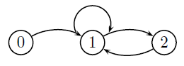
Começando em 0, o processo nunca mais retorna a este estado, fazendo com que \(D_0=\varnothing\) e \(d(0)=0\). Como o estado 1 pode retorna para ele mesmo em um passo, temos que \(d(1)=1\). Além disso, para o estado 2 temos \(D=\{2,3,4,\ldots,\}\) fazendo com que \(d(2)=1\).
Proposição
Proposição 4.10 Seja \(C\) uma classe de estados. Se \(i\in C\) e \(d(i)=d\), então todo estado em \(C\) terá período igual a \(d\).
Demonstração: Como \(i\) e \(j\) se comunicam, existem \(n_1\) e \(n_2\) tais que \(p_{ij}^{(n_1)}>0\) e \(p_{ji}^{(n_2)}>0\). Assim, temos que \[p_{ii}^{(n_1+n_2)}=\sum_{s=0}^{\infty}p_{is}^{(n_1)}p_{si}^{(n_2)}\geq p_{ij}^{(n_1)}p_{ji}^{(n_2)}>0.\] Portanto, \(n_1+n_2\in D_i\), o que equivale a dizer que existe \(a\) inteiro positivo tal que \(n_1+n_2=a\times d(i)\). Agora, note que \[\begin{align*}
p_{ii}^{(n_1+n_2+d(j))}&=\sum_{s=0}^{\infty}p_{is}^{(n_1)}p_{si}^{(n_2)}\geq
p_{ij}^{(n_1)}p_{ji}^{(n_2+d(j))}\\
&=p_{ij}^{(n_1)}\sum_{s=0}^{\infty}p_{js}^{(d(j))}p_{si}^{(n_2)}\geq
p_{ij}^{(n_1)}p_{jj}^{(d(j))}p_{ji}^{(n_2)}>0.
\end{align*}\] Portanto, \(d(j)+n_1+n_2\in D_i\) e existe \(b\) inteiro positivo tal que \(n_1+n_2+d(j)=b\times d(i)\). Portanto, \[(n_1+n_2)+d(j)=b\times d(i)\Rightarrow a\times d(i)+d(j)=b\times d(i)\Rightarrow a+\frac{d(j)}{d(i)}=b.\] Portanto, \(d(j)\) é divisível por \(d(i)\). Entretanto, trocando os estados \(i\) e \(j\) no desenvolvimento acima, pode-se concluir que \(d(i)\) é divisível por \(d(j)\). Isto implica que \(d(i)=d(j)\).
Por último, temos a seguinte definição.
Definição
Definição 4.10 Um estado recorrente positivo e aperiódico é denominado ergódico. Por consequência, a classe desse estado é também denominada ergódica.
4.6 Distribuição Estacionária
Considere o problema de determinar a probabilidade do processo estar em um estado \(j\) em particular. Conhecendo a matriz de transição e a probabilidade do estado no instante 0, para qualquer tem-se que \(n\), \[P(X_n=j)=\sum_{j=0}^{\infty}P(X_{n}=j|X_0=i)P(X_0=i)=\sum_{j=0}^{\infty}p_{ij}^{n}P(X_0=i).\] A probabilidade \(P(X_n=j)\) depende do valor de \(n\). Entretanto, se voltarmos ao Exemplo 4.10, podemos conjecturar que \(p_{ij}^{(n)}\) se aproxima de uma constante com o aumento de \(n\), fazendo com que \(P(X_n=j)\) também se torne constante. Com isso, considere a seguinte definição.
Definição
Definição 4.11 Seja \(\{X_n, n=0,1,\ldots,\}\) uma CMTD, com o espaço dos estados igual a \(\mathbb{N}\). Seja \(\pi_j,\quad j=0,1,\ldots\) a probabilidade do processo estar no estado \(j\). Dizemos que \(\bf{\pi}=\{\pi_0,\pi_1,\ldots\}\) é uma distribuição estacionária se
\[\pi_j = \sum_{i=0}^{\infty}P(X_{m+n}=j|X_{n}=i)\pi_i\]
para todo \(j\) e \(m,n\geq 0\).
Se um processo possui distribuição estacionária, então a probabilidade \(P(X_n=j)=\pi_j\) é constante em relação a \(n\). De fato, temos que
\[\begin{align} P(X_1=j)&=\sum_{k=0}^{\infty}P(X_1=j|X_0=k)P(X_0=k)=\sum_{k=0}^{\infty}\textcolor{blue}{p_{kj}}\pi_k =\pi_j \end{align}\] e, por indução,
\[\begin{align} P(X_n=j)&=\sum_{k=0}^{\infty}P(X_n=j|X_{n-1}=k)P(X_{n-1}=k)=\sum_{k=0}^{\infty}\textcolor{blue}{p_{kj}}\pi_k =\pi_j. \end{align}\]
Entretanto, uma CMTD não necessariamente possui distribuição estacionária. Por exemplo, considere a cadeia abaixo:
Seja \(\pi_0=P(X_0=0)>0\) (ou seja, a probabilidade do processo começar em zero). Note que \[P(X_1=0)=\sum_{j=0}^{2}p_{j0}\pi_0=0\neq\pi_0,\] logo esta cadeia não tem distribuição estacionária.
Como já mencionado, em certas condições existe o limite \[\pi_j=\lim_{n\rightarrow\infty}p_{ij}^{(n)},\] independente do valor de \(i\). Sendo o limite acima verdadeiro para certa cadeia, teremos que \[\begin{align*} \lim_{n\rightarrow\infty}P(X_n=j)&=\lim_{n\rightarrow\infty}\sum_{k=0}^{\infty}p_{kj}^{(n)}P(X_{0}=k)\\ &=\sum_{k=0}^{\infty}\left[\lim_{n\rightarrow\infty}p_{kj}^{(n)}\right]P(X_{0}=k)\\ &=\pi_j\sum_{k=0}^{\infty}P(X_0=k)=\pi_j, \end{align*}\] e, portanto, \(\pi\) será a distribuição estacionária da cadeia. Tais probabilidades são muitas vezes é interpretadas como a proporção do tempo que o processo gasta no estado.
No que segue são discutidas em quais situações uma CMTD possui distribuição estacionária.
Proposição
Proposição 4.11 Cadeias irredutíveis transientes não possuem distribuição estacionária.
Demonstração: Em cadeias transientes, todos os estados são visitados um número finito de vezes, logo \(\lim_{n\rightarrow\infty}p_{ij}^{(n)}=0\) para quaisquer \(i\) e \(j\). Neste caso, teremos \(\pi_j=0\) para todo \(j\).
Proposição
Proposição 4.12 Cadeias irredutíveis recorrente nulas não possuem distribuição estacionária.
Demonstração: Em uma cadeia recorrente nula, é esperado que qualquer estado não seja revisitado em um tempo finito. Com isso, para qualquer \(n\) suficientemente grande e finito, o estado foi revisitado apenas um número finito de vezes e seu comportamento é análogo a uma cadeia transiente e teremos \(\pi_j=0\) para todo \(j\).
Proposição
Proposição 4.13 Cadeias recorrente positivas com período maior que um não possuem distribuição estacionária.
Demonstração: Se existe \(\lim_{n\rightarrow\infty}p_{ij}^{(n)}=\pi_j\), então a sequência \(p_{ij}^{(1)},p_{ij}^{(2)},\ldots\) é convergente. Disto, qualquer subsequência infinita desta sequência deveria ser convergente. Isto não ocorre se houver um período maior que 1, pois haverá uma subsequência identicamente nula e outra estritamente positiva. Assim, apenas cadeias aperiódicas podem ter distribuição estacionária.
Portanto, apenas cadeias ergódicas possuem distribuição estacionária. Considerando essas restrições verdadeiras, vamos provar a existência da distribuição estacionária, caracterizá-la e demonstrar sua unicidade.
Teorema
Teorema 4.1 Uma cadeia irredutível ergódica possui distribuição estacionária. Além disso, essa distribuição é única e é dada por \[\begin{equation} \pi_j = \lim_{n\rightarrow\infty}p_{ij}^{(n)}. \end{equation}\]
Demonstração: Pelas equações de Chapman-Kolmogorov, teremos que \[p_{ij}^{(n+1)}=\sum_{k=0}^{\infty}p_{ik}^{(n)}p_{kj}.\] Como \(\pi_j =\lim_{n\rightarrow\infty}p_{ij}^{(n)}\), teremos que \[\lim_{n\rightarrow \infty}p_{ij}^{(n+1)}=\sum_{k=0}^{\infty}\lim_{n\rightarrow\infty}p_{ik}^{(n)}p_{kj}\Rightarrow \pi_j=\sum_{k=0}^{\infty}\pi_kp_{kj},\] logo, \(\pi_j\) é estacionária. Agora, seja \(\delta_0,\delta_1,\ldots\) outra distribuição estacionária. Então, é verdade que \[\delta_j=\sum_{k=0}^{\infty}p_{kj}^{(n)}\delta_k.\] Além disso, temos que \[\begin{align*}
\lim_{n\rightarrow \infty} \delta_j=\sum_{k=0}^{\infty}\lim_{n\rightarrow\infty}p_{kj}^{(n)}\delta_k\Rightarrow \delta_j =\sum_{k=0}^\infty \pi_j\delta_k = \pi_j,
\end{align*}\] logo, \(\delta_j=\pi_j\) e a distribuição estacionária é única.
Corolário
Corolário 4.4 Se existe distribuição estacionária, esta é calculada como solução do sistema \[ \mathcal{\pi}= \mathcal{\pi}{\bf P},\] com a restrição de que \(\sum_{j}\pi_j=1\).
Exemplo: Chuva - conclusão
Exemplo 4.17 Vamos concluir o Exemplo 4.11. O processo considerado é \(\{X_n,n=0,1,\ldots\}\), sendo que \(X_{n}=I({\text{Chove no dia n}})\), com a seguinte matriz de transição
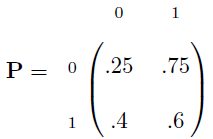
Esta cadeia é irredutível, finita e aperiódica, logo ela é ergódica. A sua distribuição estacionária será dada por
\[\left(\pi_0,\pi_1\right)=\left(\pi_0,\pi_1\right)\left(\begin{array}{rccc} .25 & .75 \\ .4 & .6\\ \end{array}\right).\]
O sistema resultante é
\[\begin{align}\left\{\begin{array}{l}\ \pi_0=\frac{1}{4}\pi_0+\frac{2}{5}\pi_1\\ \pi_1=\frac{3}{4}\pi_0+\frac{3}{5}\pi_1\\ \pi_0+\pi_1=1. \end{array}\right. \end{align}\]
Note que a terceira restrição é necessária, pois a primeira linha é linearmente dependente da segunda. Resolvendo o sistema, teremos \(\bf{π}\) \(= (8/23,15/23)\) (compare estes valores com aqueles obtidos no o Exemplo 4.11). Assim, a proporção do tempo em que chove é de \(\approx 65,22\% (15/23)\).
4.7 Processo de Ramificação
O seguinte problema foi proposto por Galton, no fim do século 19. Considere que todo filho recebe o nome do pai. Considere ainda que a distribuição do número de filhos de um indivíduo não se altere ao longo dos anos. Qual é a probabilidade de que um sobrenome seja extinto? Este tipo de problema gera uma cadeia de Markov denominada processo de ramificação.
Seja \(Z_i\) o número de descendentes do \(i\)-ésimo indivíduo, com \(E(Z)=\mu\) e \(Var(Z)=\sigma^2<\infty\). Consideremos que os indivíduos geram sua descendência independente dos demais com igual distribuição. Seja \(X_n\) o número de indivíduos na \(n\)-ésima geração. Considere que, no tempo inicial, havia apenas um indivíduo (\(X_0=1\)). Então \(X_1\), o número de indivíduos na primeira geração, é igual ao número de descendentes na primeira geração (no caso \(X_1=Z_1\)). O número de indivíduos na segunda geração (\(X_2\)) dependerá do número de indivíduos da primeira geração, e assim sucessivamente, criando
\[\begin{equation} X_n=\sum_{i=1}^{X_{n-1}}Z_i. \end{equation}\] Claramente, \(\{X_n,n=0,1,2,\ldots\}\) é uma cadeia de Markov. Desde que \(P(Z_1\leq 0)\), existe a possibilidade de que uma dada geração seja nula. Se isto ocorrer, teremos a extinção desta população, o que implica em dizer que o estado 0 é absorvente. Como sempre há a possibilidade de o processo entrar no estado zero, teremos que todos os outros estados devem ser transientes.
Embora a distribuição de \(X_n\) possa ser complicada, podemos obter sua média e variância.
Proposição
Proposição 4.14 Temos que \[\begin{equation}E(X_n)=\mu^n \end{equation}\] e que \[\begin{align}Var(X_n)=\left\{\begin{array}{ll}\sigma^2\mu^{n-1}\frac{1-\mu^{n-1}}{1-\mu} &,\mu\neq 1 \\ n\sigma^2 &\mu=1 \\ \end{array} \right. \end{align}\]
\[\begin{align*} E(X_n)&=E\left(\sum_{i=1}^{X_{n-1}Z_i}\right)=E\left.\left(E\left(\sum_{i=1}^{X_{n-1}}Z_i\right|X_{n-1}\right)\right)= E\left.\left(\sum_{i=1}^{X_{n-1}}E\left(Z_1\right|X_{n-1}\right)\right)\\ &=E\left(X_{n-1}E(Z_1)\right)=E\left(X_{n-1}\mu\right)=\mu E(X_{n-1}). \end{align*}\] Utilizando o fato de que \(X_0=1\), temos que \(E(X_1)=\mu E(X_0)=\mu\) e que \(E(X_2)=\mu E(X_1)=\mu^2\). Uma simples indução sobre \(n\) mostra que \(E(X_n)=\mu^n\).
Considere a amostra de estados \(X_0,X_1,\ldots,X_n\). Assuma que a cadeia possui um número \(k+1\)(finito) de estados e seja
\[{\bf P}=\left(\begin{array}{ccc} \theta_{00} & \cdots & \theta_{0k} \\ \vdots & \vdots & \vdots \\ \theta_{k0} & \cdots & \theta_{kk}\\ \end{array} \ \right),\]
sua matriz de transição. Vamos estimar \(\theta_{ij}\) via o método da máxima verossimilhança. A função de verossimilhança será dada por \[\begin{align}
L({\bf P})&= P(X_0=x_0|{\bf P})\prod_{l=1}^{k}P(X_l=x_l|X_{l-1}=x_{l-1},{\bf P})\\ &=P(X_0=x_0|{\bf P})\prod_{i=0}^k\prod_{j=0}^{k}\theta_{ij}^{n_{ij}},
\end{align}\] onde \(n_{ij}\) é o número de vezes que o processo realizou uma transição do estado \(i\) para o estado \(j\). Aplicando o logaritmo na equação acima teremos \[\begin{align}
l({\bf P})&=\log L({\bf P})=\log P(X_0=x_0|{\bf P}) + \sum_{i=0}^{k}\sum_{j=0}^{k}n_{ij}\log \theta_{ij}\\
&\approx \sum_{i=0}^{k}\sum_{j=0}^{k}n_{ij}\log \theta_{ij}
\end{align}\]
onde o termo \(\log P(X_1=x_1|{\bf P})\) pode ser negligenciado, desde que o tamanho da amostra seja razoavelmente grande. Lembrando que \(\sum_{j=0}^{k}\theta_{ij}=1\), façamos \(\theta_{ik}=1-\theta_{i0}-\cdots \theta_{i,k-1}\). Notando que, para \(j=0,\ldots,k-1\), \[\begin{align}
\frac{\partial}{\partial\theta_{ij}}l({\bf P})=0\Rightarrow \frac{n_{ij}}{\theta_{ij}} -\frac{n_{ik}}{1-\sum_{l=0}^{k-1}\theta_{il}}=0,
\end{align}\] teremos que \[\begin{align*}
\frac{n_{ij}}{\theta_{ij}}=\frac{n_{ik}}{1-\sum_{l=0}^{k-1}\theta_{il}} &\Rightarrow n_{ij}(1-\sum_{l=0}^{k-1}\theta_{il})=n_{ik}\theta_{ij}\\
&\Rightarrow \sum_{j=0}^{k}n_{ij}(1-\sum_{l=0}^{k-1}\theta_{il})=n_{ik}\sum_{j=0}^{k}\theta_{ij}\\
&\Rightarrow 1-\sum_{l=0}^{k-1}=\frac{n_{ik}}{n_i},
\end{align*}\] onde \(n_i = \sum_{j=0}^{k}n_{ij}\) é o número de vezes que o estado \(i\) apareceu na amostra.
4.8 Cadeias de Ordens Maiores
4.8.1 Transformação para uma CMTD de ordem 1
4.8.2 O Modelo de Rafttery
4.9 Exercícios
Exercício 4.1 Suponha que a moeda 1 tem probabilidade 0,7 de dar cara e a moeda 2 tem 0,6. Se a moeda lançada hoje der cara, amanhã jogaremos a moeda 1. Em caso contrário jogaremos a moeda 2. Se a moeda lançada inicialmente tem a mesma chance de ser a 1 ou a 2, qual a probabilidade da moeda lançada no terceiro dia ser a 1?
Exercício 4.2 Três bolas brancas e três bolas pretas são distribuídas em duas urnas de modo que cada uma contenha três bolas. Dizemos que o sistema está em \(i\) se a primeira urna contém \(i\) bolas brancas. A cada passo retiramos uma bola de cada urna. A bola retirada da primeira urna é recolocada na segunda e a que foi retirada da segunda é recolocada na primeira. Seja \(X_n\) o estado do sistema em \(n\) passos. Explique porque \(\{ X_n, n = 0,1,2,\ldots\}\) é uma cadeia de Markov e encontre a sua matriz de transição.
Exercício 4.3 Determine a matriz de transição \({\bf P}\) para as seguintes cadeias:
Considere uma sequência de lançamentos de uma moeda com probabilidade \(p\) de sair cara. Após \(n\) lançamentos o estado do processo é o número de caras em \(n\) lançamentos menos o número de coroas.
\(N\) bolas pretas e \(N\) bolas brancas são colocadas em duas urnas, cada uma com \(N\) bolas. A cada passo uma bola e selecionada de cada urna e trocada de lugar. O estado do sistema é o número de bolas brancas na primeira urna.
Um rato branco é colocado no labirinto abaixo. O rato se move através dos compartimentos ao acaso, ou seja, se existem \(k\) compartimentos vzsinhos ao que ele está, então ele irá para qualquer um deles com probabilidade \(1/k\). Em cada instante de tempo ele muda de compartimento. O estado do sistema é o número do compartimento em que o rato está.
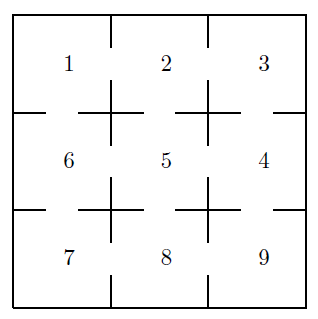
Exercício 4.4
Considere duas urnas \(A\) e \(B\) contendo \(N\) bolas no total. Um experimento é realizado no qual um bola é selecionada ao acaso no tempo \(n (n=1,2,3,\ldots)\) entre as \(N\) bolas. Então uma urna é selecionada aleatoriamente (a probabilidade de escolher a urna \(A\) é \(p\)) e a bola selecionada é colocada nesta urna. O estado do sistema em cada instante de tempo é o número de bolas na urna \(A\). Determine a matriz de transição desta CM.
Assuma que no tempo \(t\) existem exatamente \(k\) bolas em \(A\). No tempo \(t+1\) uma urna é selecionada com probabilidade igual á proporção de seu conteúdo (por exemplo, a urna \(A\) é selecionada com probabilidade \(k/N\)). Então uma bola é selecionada de \(A\) com probabilidade \(p\) ou de \(B\) com probabilidade \(1-p\) e colocada na urna selecionada anteriormente. Determine a matriz de transição desta CM.
Agora assuma que no tempo \(t+1\) uma bola e uma urna são selecionados com probabilidade proporcional ao conteúdo da urna (uma bola da urna \(A\) é selecionada com probabilidade \(k/N\) e a urna \(A\) é selecionada com probabilidade \(k/n\)). Determine a matriz de transição da CM com estados representados pelo conteúdo de \(A\).
Exercício 4.5 Encontre a distribuição estacionária da cadeia de Markov com a seguinte matriz de transição: \[\begin{align*} \left(\begin{array}{cc} p & 1-p \\ 1-p & p \\\end{array}\right). \end{align*}\]
Exercício 4.6 Seja \(\{X_n,n=0,1,2,\ldots\}\) uma cadeia de Markov com espaço dos estados \(\{0,1\}\), \(P(X_n=0|X_{n-1}=0)=0,3=P(X_n=1|X_{n-1}=1)\). Se \(X_n=1\), um jogador ganha um real. Em caso contrário, o jogador ganha dois reais. Seja \(Y_n\) a quantidade de dinheiro que o jogador ganhou {} \(n\) (ou seja, um ou dois reais). Para \(n\) suficientemente grande, calcule \(E(Y_n)\).
Exercício 4.7 Mostre que uma cadeia irredutível finita com \(p_{ii}>0\) possui distribuição estacionária.
Exercício 4.8 Certo evento ocorre segundo um processo de Poisson com taxa um por hora. Em cada hora, verificamos se ocorreu pelo menos um evento deste tipo e, em caso afirmativo, colocamos uma bola dentro de uma urna. Seja \(Y_n\) o número de bolas na urna na \(n\)-ésima hora. Mostre que \(Y_n\) é uma cadeia de Markov e construa a sua matriz de transição. Encontre suas classes e classifique-as. Existe distribuição estacionária para esta cadeia? Se existir, encontre-a. Se não existir, justifique.
Exercício 4.9 Determine as classes e a periodicidade dos estados das CM com as seguintes matrizes de transição:
\[ \begin{align*}\left( \begin{array}{cccc} 0 & 0 & 1 & 0 \\ 1 & 0 & 0 & 0 \\ 1/2&1/2&0 & 0 \\ 1/3&1/3&1/3&0 \end{array}\right)\end{align*}\]
\[ \begin{align*}\left( \begin{array}{cccc} 0 & 1 & 0 & 0 \\ 0 & 0 & 0 & 1 \\ 0 & 1 & 0 & 0 \\ 1/3&0 &2/3&0 \end{array}\right)\end{align*} \]
Exercício 4.10 Adapte o exemplo da fila discreta para o caso em que \(2\) clientes são atendidos ao mesmo tempo.
Exercício 4.11 Encontre as classes a seguinte CMTD, classifique-as como recorrentes ou transientes e encontre seus períodos.
\[ \left(\begin{array}{ccccccc} 0 & 1/3 & 2/3 & 0 & 0 & 0 & 0 \\ 1 & 0 & 0 & 0 & 0 & 0 & 0 \\ 0 & 0 & 4/5 & 1/5 & 0 & 0 & 0 \\ 0 & 0 & 1/6 & 0 & 2/6 & 3/6 & 0 \\ 0 & 0 & 0 & 0 & 0 & 0 & 1 \\ 0 & 0 & 0 & 0 & 0 & 1 & 0 \\ 0 & 0 & 0 & 0 & 1/2 & 0 & 1/2 \\ \end{array}\right) \]
Exercício 4.12 Uma matriz estocástica (quadrada) é uma matriz \({\bf A}=\{a_{ij}\}\), onde \(\sum_{j}a_{ij}=1\) e \(0,\leq a_{ij}\leq 1\). Qualquer matriz estocástica é uma matriz de transição. Entretanto, não necessariamente uma matriz estocástica será uma matriz de transição em dois passos. Em particular, mostre que uma matriz estocástica \(2\times 2\) será uma matriz de transição em dois passos se e somente se a soma dos elementos se sua diagonal principal for maior ou igual a 1.
Exercício 4.13 Considere uma CM com \(r\) estados. Prove que:
- Se um estado \(k\) é acessível a partir de \(j\), então ele pode ser atingido em \(r-1\) passos ou menos.
- Se \(j\) é um estado recorrente, então existe \(\alpha\in(0,1)\) tal que para \(nr\) a probabilidade de que o primeiro retorno ao estado \(j\) ocorra após \(n\) transições é \(\leq \alpha^n\).
Exercício 4.14 Seja \[\begin{align*} {\bf P}=\left(\begin{array}{cc} 1-a & a \\ b & 1-b\end{array}\right),\quad a>0,\quad b<1. \end{align*}\] Prove que \[\begin{align*} {\bf P}^n=\frac{1}{a+b}\left(\begin{array}{cc} b & a \\ b & a\end{array}\right)+ \frac{(1-a-b)^n}{a+b}\left(\begin{array}{cc} a & -a \\ -b & b\end{array}\right) \end{align*}\]
Exercício 4.15 Uma pessoa com uma doença contagiosa entra em uma população. Durante cada instante de tempo, ou ele infecta outra pessoa com probabilidade \(p\), ou seus sintomas aparecem e ele é descoberto pela vigilância sanitária com probabilidade \(1-p\). Encontre a distribuição de probabilidade do número de pessoas infectadas e sem sintomas na população após a descoberta do primeiro portador. Assuma que a doença se comporta da mesma forma em todas as pessoas.
Exercício 4.16 Uma CM possui a seguinte matriz de transição: \[\begin{align*} {\bf P}=\left( \begin{array}{ccc}0,7 & 0,2 & 0,1 \\ 0 & 0,6 & 0,4 \\ 0,5 & 0 & 0,5 \end{array}\right). \end{align*}\] Determine as distribuições limites.
Exercício 4.17 Uma CM, com estados \(\{0,1,2\}\), possui a seguinte matriz de transição: \[\begin{align*} {\bf P}=\left( \begin{array}{ccc}0,1 & 0,1 & 0,8 \\ 0,2 & 0,2 & 0,6 \\ 0,3 & 0,3 & 0,4 \end{array}\right). \end{align*}\] Assintoticamente, qual a proporção do tempo que o processo gasta no estado 1?
Exercício 4.18 Uma CM, com estados \(\{0,1,2\}\), possui a seguinte matriz de transição: \[\begin{align*} {\bf P}=\left( \begin{array}{ccc}0,3 & 0,2 & 0,5 \\ 0,5 & 0,1 & 0,4 \\ 0,5 & 0,2 & 0,3 \end{array}\right). \end{align*}\]
Cada tempo que o processo gasta no estado um gera um custo de \(R 2\). Cada tempo que o processo gasta no estado dois gera um custo de \(R 5\). Cada tempo que o processo gasta no estado três gera um custo de \(R 3\). Assintoticamente, qual o custo esperado por essa CM?
Exercício 4.19 Um ônibus opera em uma rota contínua com paradas intermediárias. A chegada do ônibus em uma parada é classificada em uma das três classes:
- Adiantado
- Pontual
- Atrasado
Suponha que a sucessão desses estados é proveniente de uma CM com matriz de transição: \[\begin{align*} {\bf P}=\left( \begin{array}{ccc}0,5 & 0,4 & 0,1 \\ 0,2 & 0,5 & 0,3 \\ 0,1 & 0,2 & 0,7 \end{array}\right). \end{align*}\] Encontre a distribuição estacionária desta cadeia. Qual é a probabilidade de que, em longo prazo, o ônibus esteja atrasado?
Exercício 4.20 Considere duas bolas brancas e duas pretas. Essas quatro bolas estão distribuídas em duas urnas. Cada urna contém duas bolas e, a cada minuto, uma bola é retirada da urna 1, outra da urna 2. Em seguida, a bola retirada da urna \(i\) é colocada na urna \(j\), com \(i,j=\{1,2\}\). Seja \(\{X_{n},n=0,1,\ldots\}\) o número de bolas brancas na urna 1 no \(n\)-ésimo minuto.
- Discuta porquê o processo \(\{X_n,n=0,1,\ldots\}\) é uma CMTD.
- Encontre as classes desta cadeia e classifique-as como recorrentes e transientes.
- Verifique se existe distribuição estacionária para esta CMTD. Em caso afirmativo, encontre-a.
Exercício 4.21 O consumo energético de uma casa pode ser classificado como A, B ou C. Foi constatado que a classificação mensal desta casa é uma CMTD com a seguinte matriz de transição
| A | B | C | |
|---|---|---|---|
| A | 1/3 | 2/3 | 0 |
| B | 1/3 | 1/3 | 1/3 |
| C | 1/3 | 0 | 2/3 |
Mostre que esta cadeia satisfaz as condições necessárias para a existência da distribuição estacionária e calcule-a.
O plural se deve ao fato de que existe uma equação para cada tripla \((i,j,m)\).↩︎